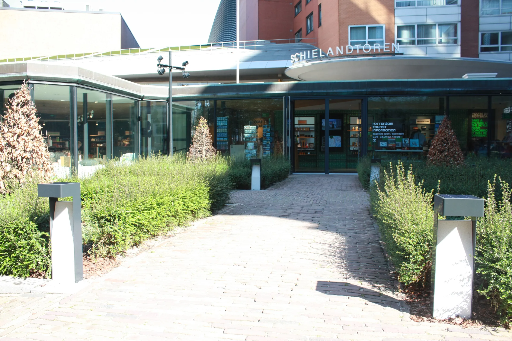
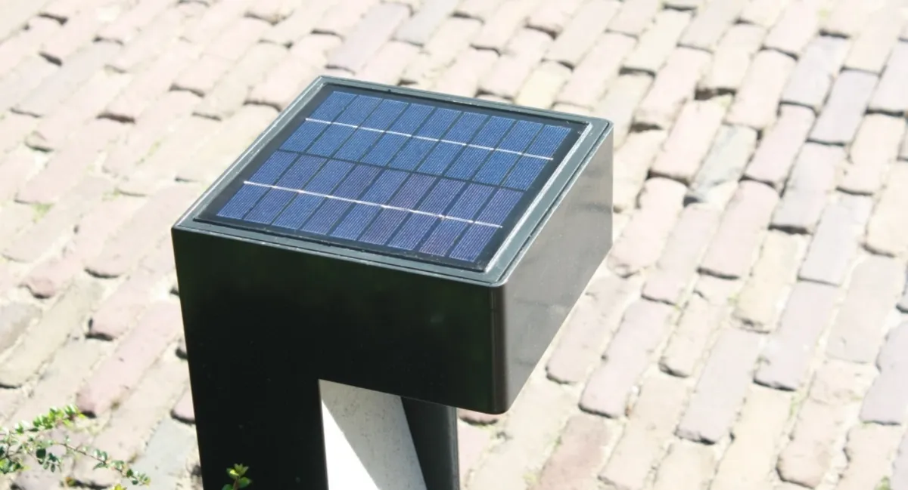
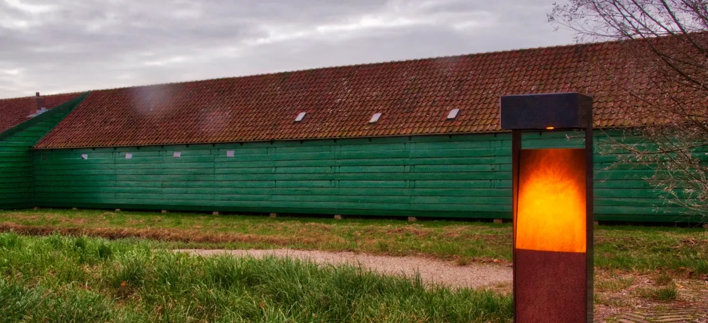
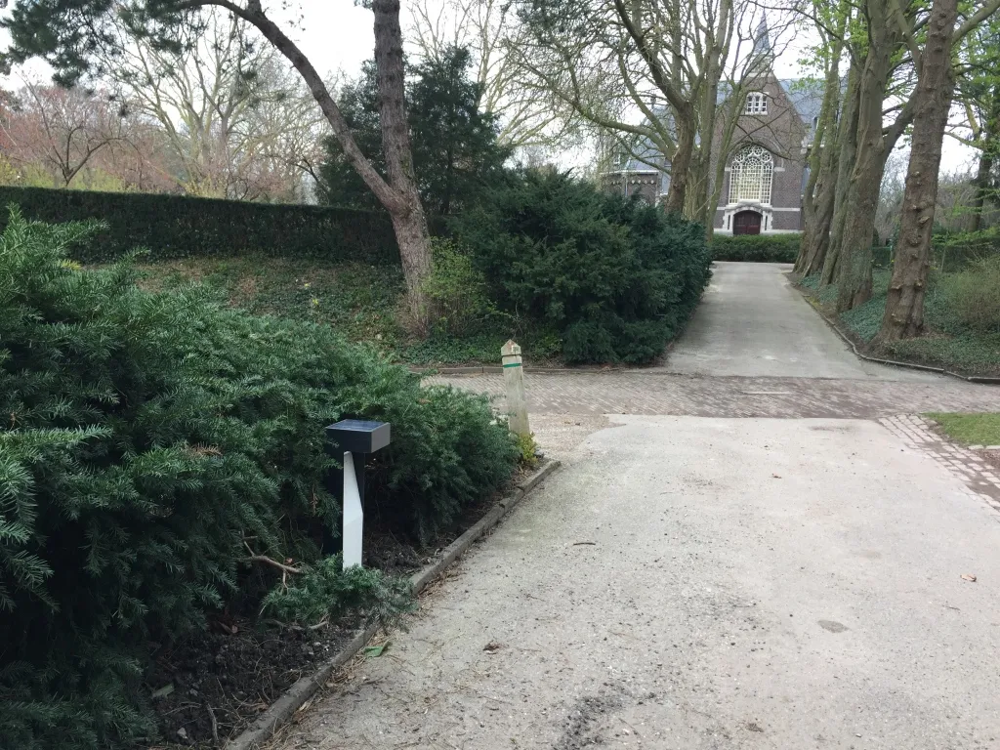

De Solarbolder is ontworpen om 365 dagen per jaar licht te geven op zon en daglicht. Hoeveel daglicht er op de plek valt, bepaalt wel of een plek geschikt is; dat bekijken we vooraf.
Armatuur · Offgrid
Solarbolder

De Solarbolder is een staand armatuur dat los van het elektriciteitsnet werkt. De enige voorziening die het nodig heeft is zon en daglicht; daarmee geeft het 365 dagen per jaar licht in de duisternis.
Het ontwerp is van Iris Dijkstra van Atelier LEK. De Licht Fabriek heeft dat idee samen met Atelier LEK omgezet in een duurzaam gefabriceerde bolder: roestvast staal, terrazzo en duurzame elektronica, geproduceerd in Nederland.
Herkenbaar?
Waar een Solarbolder het verschil maakt
Geen kabel in de grond
Een tuin, een parkpad, een plek bij een monument: overal waar graven duur, ongewenst of onmogelijk is. De bolder staat op zichzelf.
Een plek die om ontwerp vraagt
RVS met poedercoat en een reflector van terrazzo of azobé. Een armatuur dat overdag een object is en 's avonds licht.
Licht met zo min mogelijk impact
Geen netaansluiting, geen verbruik van het net. In amber, dat minder insecten aantrekt, voor het buitengebied.
Wat het oplevert
Wat de Solarbolder oplevert
Alleen zon en daglicht
Het zonnepaneel in het bovenvlak laadt overdag; 's nachts brandt de bolder.
Geen netaansluiting
Geen graafwerk, geen kabels, geen aansluitkosten.
365 dagen per jaar
Ontworpen om het hele jaar door licht te geven in de duisternis.
Made in Holland
Geproduceerd in Nederland, in RVS, terrazzo en duurzame elektronica.
Opties en uitvoeringen
Uitvoeringen
De Solarbolder is in verschillende materialen en lichtkleuren gemaakt. Dit zijn de uitvoeringen uit onze projecten.
Zon en daglicht
Offgrid: het zonnepaneel zit in het bovenvlak van de bolder. Geen aansluiting op het net.
RVS met poedercoat
Roestvast staal, gepoedercoat in de gewenste kleur.
Terrazzo of azobé
Wit carrara-terrazzo voor een lichte, stedelijke uitstraling of azobé-hardhout voor het buitengebied.
3000K of amber
Warmwit voor tuin en park; amber waar insecten en nachtdieren ontzien moeten worden.
Iris Dijkstra, Atelier LEK
Bedacht en ontworpen door Atelier LEK, samen met De Licht Fabriek uitgewerkt tot een produceerbaar armatuur.
Nederland
Gemaakt in Nederland van hoogwaardige materialen en duurzame elektronica.
Zo werken we
Van plek tot brandende bolder
Een Solarbolder vraagt geen installatie van kabels, wel een goede plek: genoeg daglicht op het paneel en een stevige ondergrond.
-
01
Plek en wens
Waar komt de bolder, hoeveel daglicht valt er, en welke uitvoering past bij de plek: terrazzo of azobé, 3000K of amber.
Jij levert situatieschets of foto's van de plek
-
02
Uitvoering vastleggen
We stellen de uitvoering en het aantal voor en maken een prijsopgave.
Jij levert akkoord op uitvoering en aantal
-
03
Productie en plaatsing
De bolders worden in Nederland geproduceerd en op de plek gezet. Daarna doet de zon de rest.
Jij levert toegang tot de locatie
In beeld
De Solarbolder van dichtbij

Reflector
Wit carrara-terrazzo
De reflector verdeelt het licht naar beneden en is overdag het gezicht van de bolder.

Zonnepaneel
In het bovenvlak
Het paneel zit verzonken in de RVS-behuizing met poedercoat.

Amber
Azobé en amber LED
De uitvoering voor het buitengebied, hier in de avondschemer bij een weiland.

Park
Langs een parkpad
Solarbolders tussen de bomen in Crooswijk, Rotterdam.
Solarbolders in de tuin van het Schielandhuis
Offgrid Solarbolders langs de paden in de tuin van het Schielandhuis in Rotterdam, met een witte terrazzo reflector.

Solarbolders langs het parkpad in Crooswijk
Solarbolders in 3000K met terrazzo reflector langs een parkpad in Crooswijk, Rotterdam.

Solarbolder met amber LED en azobé reflector
Een Solarbolder in RVS met amberkleurige LED en een reflector van azobé, in het buitengebied.

FAQ
Veelgestelde vragen
Nee. Het zonnepaneel zit in het bovenvlak van de bolder en de elektronica zit erin. Er hoeft geen kabel in de grond.
Iris Dijkstra van Atelier LEK. De Licht Fabriek heeft het ontwerp samen met Atelier LEK omgezet in een duurzaam gefabriceerde bolder die in Nederland wordt geproduceerd.
Contact
Een plek zonder kabel die licht nodig heeft?
Stuur je maten, tekening of vraag. We denken mee over wat er past en maken een prijsopgave.